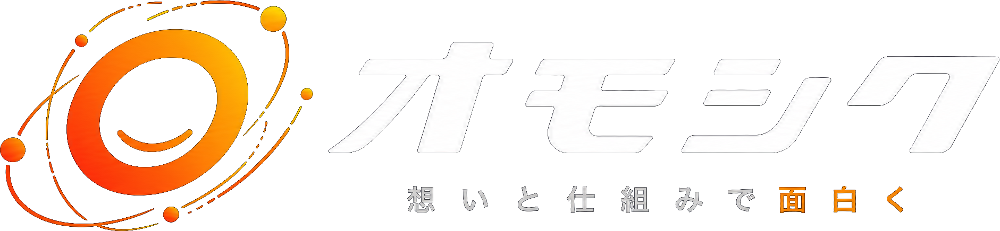
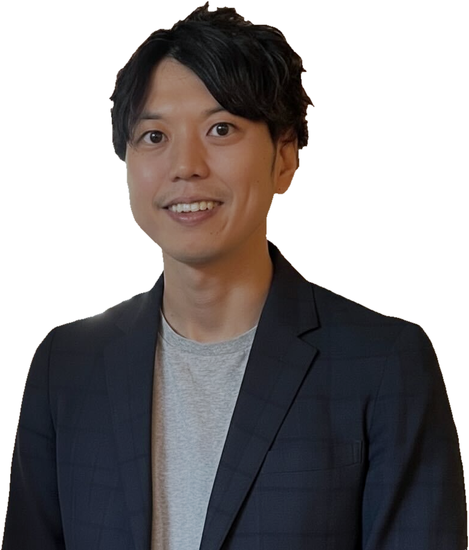

新規事業立ち上げ・マーケ責任者（事業会社）
新サービスの初年度売上10億円に貢献
獲得単価（CAC）▲70%
年間LTV12→16万円
月次解約率10→6%
立ち上げから広告・CRM・データ分析まで一貫して推進。MVPを受賞。
→ 事業を自分で伸ばした経験

無料診断→伸びを止めている所を見つけ、売上・利益にいちばん効く一手を、AI・データ・システムで形にします。
戦略づくりから、現場で使える仕組みの実装・定着まで一貫して担当します。
60分・オンライン。1週間以内に、伸ばす数字・止めている所・3か月の一手を1枚のプランにしてお渡しします。
What we do
AI・データ駆動で業務を再設計し、ビジネスインパクトをつくります。取り組む領域は、事業承継、セキュリティ、データドリブン経営、業務効率化、営業・マーケDXなどです。
↻03で測った結果から、次のボトルネックを見つけ直します。伸び続ける状態になるまで回します。プランに納得いただけた場合だけ、契約に進みます。
Why Omoshiku

Takao Nishikawa
合同会社オモシク 代表西川 太雄
リサーチ会社の法人営業から始まり、事業会社で新規事業の立ち上げとマーケティング、外資コンサルで戦略とデータ・CRM、事業会社で開発とAI活用を担ってきました。
営業・事業・戦略・実装。遠回りに見えた経歴が、いまは全部、事業を伸ばすためのピースになっています。調べる、決める、つくる、現場に根づかせる、を分業せずに1人で通します。
合同会社オモシクの代表として、経営の課題とAI・データ活用をつなぎ、売上・利益が伸び続ける仕組みづくりを支援しています。
資格JCC認知科学コーチング認定／基本情報技術者／PMP／統計検定2級／G検定／Salesforce Marketing Cloud 認定／Tableau データアナリスト
新規事業立ち上げ・マーケ責任者（事業会社）
立ち上げから広告・CRM・データ分析まで一貫して推進。MVPを受賞。
→ 事業を自分で伸ばした経験
外資コンサルData & CRM アソシエイトマネージャー
戦略・施策の実行から、データ活用の内製化まで担当。
別事例: B2B EC のサイト改善で、売上効果 年換算 +7億円（6施策中4施策でCVR改善）
→ 戦略とデータ・CRMの型
開発マネージャー・AX推進（事業会社）
5名の開発チームを率い、業務アプリ・MA基盤を自社で開発。業務の再設計から、運用の定着まで推進。
→ 決めたことを仕組みにし、現場に残す力
事業・戦略・実装。3つを1人で持つから、
課題から成果まで、分けずに通せます。
※ 代表の前職・現職での担当実績です。各成果は組織・チームでの取り組みによるもので、社名は伏せています。
Services
診断で伺った課題に合わせて、次の4つの層から必要なものを組み合わせ、個別にご提案します。決めるだけ、つくるだけで終わらせず、社内で回る所まで支援します。
どこで伸ばすかを決める
どう伸ばすかを設計する
仕組みを形にする
社内で回る状態にする
よくあるご相談を、成果と期間が分かる形にまとめた一例です。「AI業務活用スタート」と「セキュリティ診断」は、成果物が決まった短期のパッケージです。
経営月次で伴走
KPIの設計から始め、数字で先を読み、会議で次の一手を決められる経営にする
経営者・経営企画・事業責任者へ
つくる成果KPIツリーと経営ダッシュボード、予実と打ち手の試算で決める会議
進め方: 売上・利益をKPIツリーに分けて追う指標を決める → 散らばったデータをつなぎ、経営ダッシュボードを作る → 予実と打ち手の試算を、毎月の会議の進め方に組み込む
期間: 最初の3か月でKPI設計・データの統合・ダッシュボード。その後は月次で、予実と打ち手の検証を伴走
AI・データ活用短期・定額
毎月の集計・資料づくりをAIに任せ、人は判断と顧客対応に集中する
部門長・経営企画へ
つくる成果選んだ1業務の作業時間を、半分以下に（目標）
成果物: 動く仕組み・運用手順・削減時間の測定
業務・コスト月次で伴走
増え続けるSaaSの月額を、自社で直せる仕組みに置き換えて下げる
経営者・業務の責任者・情報システムへ
つくる成果SaaS費用の削減と、業務に合わせて社内で直せる仕組み
実績例: SaaSの自社開発への置き換えで年3,000万円超を削減（代表の現職での担当実績）
期間: 3〜6か月。費用の大きいツール1つから始めることも可
経営×デジタル月次・顧問
デジタル・AIの判断を経営者の隣で一緒に行い、投資の空振りを減らす
社内にCTO・CDOがいない経営者・事業責任者へ
つくる成果DX・AI投資の優先順位と、社内で進められる推進体制
代表は事業会社で開発マネージャーとして5名のチームを率い、AX推進を担当（現職）
営業・マーケティング月次で伴走
新規獲得だけに頼らず、顧客が買い続ける仕組みで売上を伸ばす
事業部長・マーケ責任者・営業部長へ
つくる成果顧客1人あたりの売上（LTV）・継続率・獲得単価の改善
実績例: D2Cで新規顧客のLTV +42%、定期注文率 28%→42%（代表の前職での担当実績）
期間: 3か月で分析・設計・配信を1巡、その後は運用と内製化を伴走
セキュリティ短期・定額
クラウド・SaaS・AIの使い方を点検し、情報が漏れないルールと設定に整える
経営者・情報システム・総務へ
つくる成果リスク一覧と優先順位、利用ルールと設定基準がそろい、全社で安心してツールを使える状態
成果物: リスク一覧・利用ルール（AIを含む）・設定基準・説明会
Vision
DXは手段です。目指すのは、売上・利益・主体性が回り続けること。
想いはあるのに、仕組みがそれを止めている。営業でも、コンサルでも、事業会社でも、そんな場面を何度も見てきました。足りないのは才能ではなく、努力の向きと仕組みが合っていないだけのことが多い、というのが私の実感です。
AI・データは、人を置き換えるためではなく、人の想いと会社の強みを輝かせるために使います。伸びを止めている所を経営者と一緒に見つけて外し、伸び続ける会社を一社ずつ増やしていきます。
合同会社オモシク 代表 西川 太雄
Free diagnosis
オンラインでお話を伺い、1週間以内に、伸ばす数字・伸びを止めている所・3か月の一手を1枚にまとめてご提案します。課題がまとまっていなくても構いません。
成長ボトルネック診断（60分・オンライン）売上・利益を分けて見ながら、伸びを止めている所を一緒に探します
サクセスプランのご提案（1週間以内）伸ばす数字・止めている所・3か月の一手と体制を1枚にまとめます
伴走の開始プランに納得いただけた場合だけ、契約に進みます
内容を確認のうえ、2営業日以内にメールでご連絡します。お急ぎの場合は info@omoshiku.jp まで直接ご連絡ください。